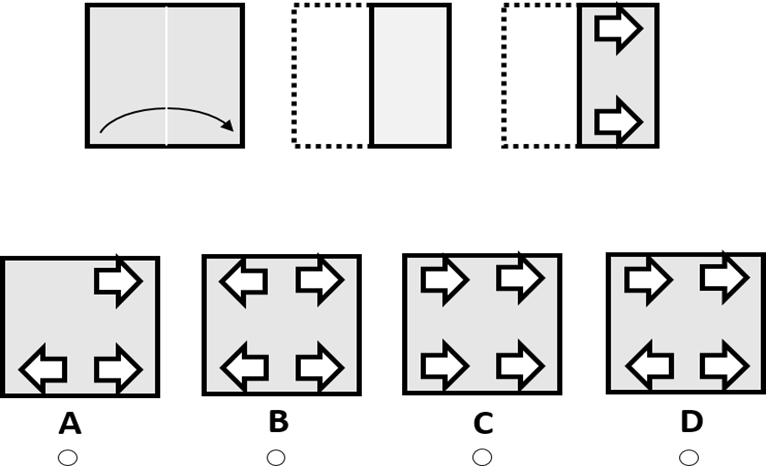

In the questions based on Paper Folding and Cutting a few figures are given showing the way in which a piece is to be folded and then cut from a particular section. The dotted line is the reference line along which the paper is to be folded and the arrow indicates the direction of the fold. Thus, these figures indicate the sequence in which the paper is to be folded. The designs from the cut will appear on each one of the folds made on the paper. In questions based on paper folding and cutting it can be asked to find either the folded or unfolded pattern of the sheet. Let us see sample example
Sample Example :
Solution :The figures at the top represent a square piece of paper being folded, One of the options figures shows where the perforation will be when the paper is fully unfolded. You have to understand which of these images is the right one. First, the paper was folded horizontally, from left to right. Then, one holes were punched out. Therefore, when the paper is unfolded the holes will mirror on the left and right side of the sheet. The right answer is “B”.